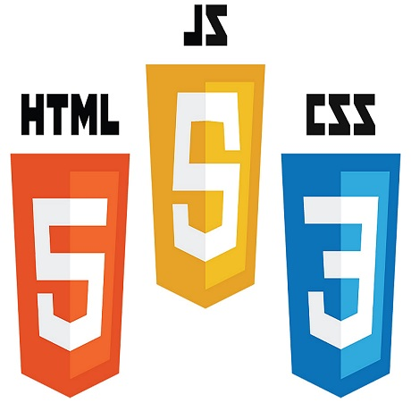

The Odin Project
The Odin Project is a great website to start learning web development. With the courses they provide you will learn HTML, CSS, Javascript and more!
The Paths
Sign Up
Make sure you sign up so you can see and save your progress!
Foundations
The Foundations will teach you the basics of HTML, CSS, and Javascript!
Ruby Path

You can choose this path to go full stack into Ruby!
Javascript Path

You can choose this path to go full stack into Javacript!
Reviews
Before I started the Odin Project I had literally ZERO programming experience. After almost exactly a year of working through the program, I was offered a job as a front end web developer. Odin taught me all the most crucial skills in webdev and gave me an incredibly strong foundation for branching out and learning other pieces of the web-dev puzzle along the way.
I started like a lot of us, knowing next to nothing about programming. My education and career had been in opera (singing, not the browser 😅). With my previous job causing me immense anxiety I decided to give it a try. First as a joke, then as a dare, and finally as a new passion. After completing the course (frontend focused), I managed to get my first job within 1.5 months! All it took was one awesome company who could look past my unorthodox education and take a chance on me.
It's time to start building websites!
Sign up by clicking that button and get started today! It's FREE!